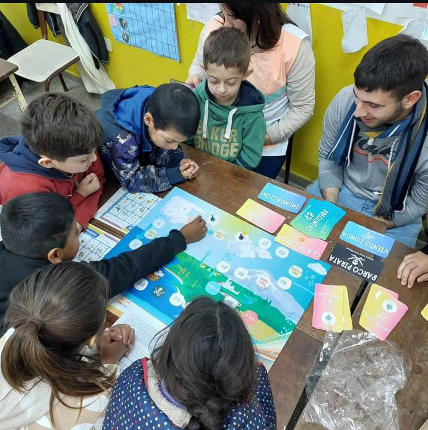
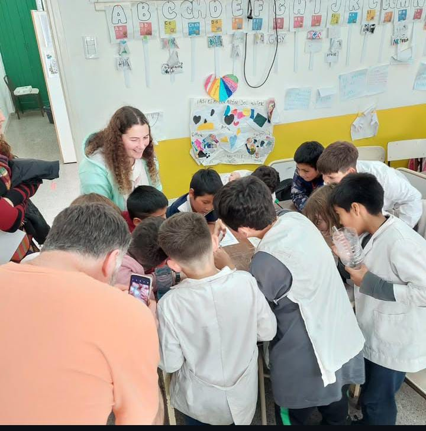
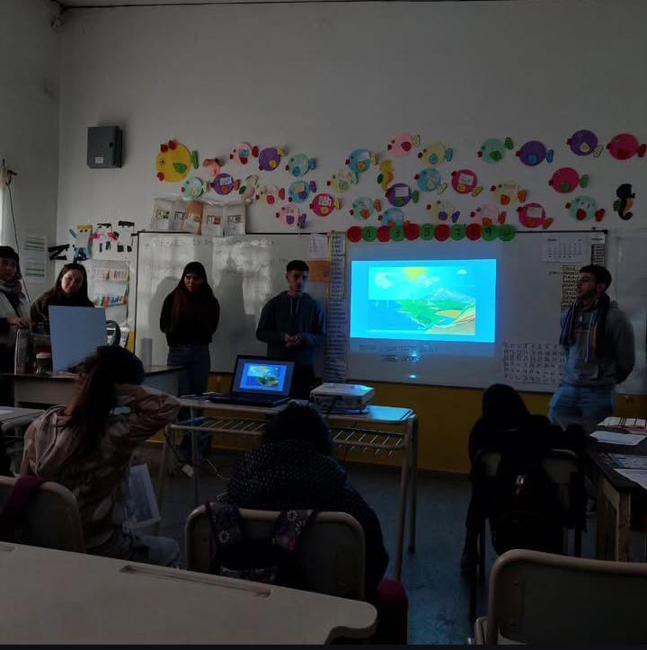
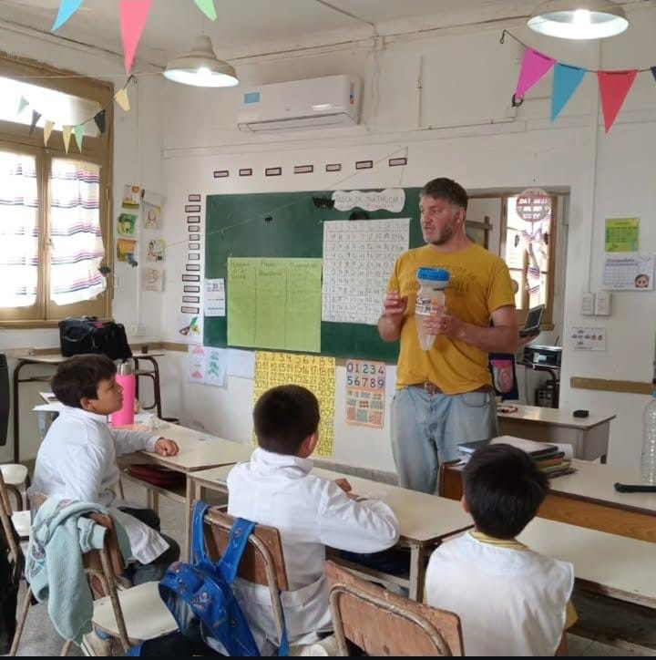
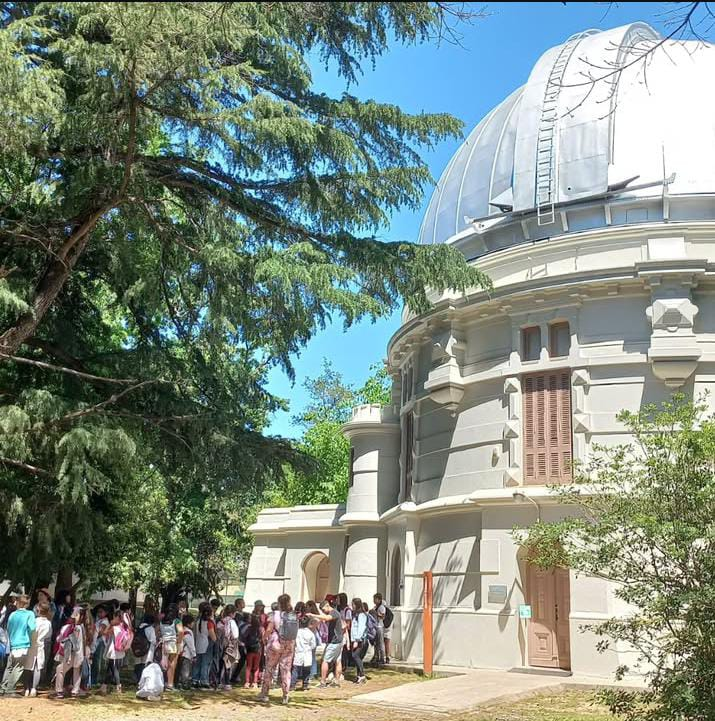

Material Didáctico y Calendario de Talleres
Descargá recursos libres diseñados especialmente por la carrera de Meteorología para el aula.
Guías Metodológicas Descargables
Docentes
Manual de Registro y Lectura del Tiempo
Guía práctica para armar planillas diarias de observación visual y escalas de nubes en colegios rurales.
Tecnología
Montaje de Estaciones Arduino
Esquemas electrónicos, cableado de sensores de temperatura DHT22 y calibración del código fuente C++.
Alumnos
Cuadernillo Climatológico Infantil
Actividades didácticas e ilustraciones lúdicas acerca del ciclo del agua y fenómenos meteorológicos regionales.
Así fueron nuestras visitas





